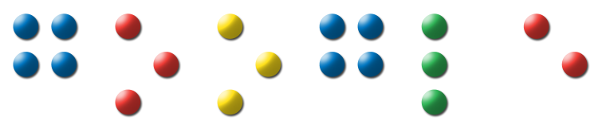

Overview
- Introduction
- TalkBack
- Eyes-Free Applications
- Conclusion
- Q & A
Introduction: Android
- Super phone with many senses
- Open platform
- Wealth of hardware choices
Introduction: Eyes-Free Project
- Goal: "Creating applications for Android that help change people's lives."
- Access for Android applications
- Efficient access for eyes-free usage
TalkBack
- Android screen reader built on the Android Accessibility Framework
- Provides spoken feedback for Android's built-in widgets
- Free and open source
TalkBack
- Phonebook
- Chat
- YouTube
- Stitcher
TalkBack
- SoundBack: Non-speech auditory cues
- KickBack: Haptic feedback
- Spiel: Independent 3rd party screen reader built using the same framework
Eyes-Free Applications
- Applications optimized for eyes-free usage
- Compass, Dialer, Shell, Rock Lock
Talking Compass
- Inspired by a real life use-case
- One of our first Eyes-Free Android apps
- Simple app that speaks the current heading
Talking Dialer
- Why are touch screens seen as a problem?
- Make the buttons find the user
- Stroke to dial + haptic feedback
Talking Dialer
- Contacts
- Extend circle dialer concept to letters
- Virtual d-pad
Eyes-Free Shell
- Alternative home screen
- Uses the same circle dialer concept
- Quick access for common actions
Eyes-Free Shell
- Voice search with spoken feedback
- User definable shortcuts
- Find and launch apps using the circle dialer with letters
Rock Lock Music Player
- Fast, efficient eyes-free access to your audio content
- Using the circle dialer for player controls
Conclusion
- Access+ Efficient Task Completion
- Take advantage of the super phone's many senses
- Empowering developers with an open platform and APIs
Resources
- http://eyes-free.googlecode.com
- http://www.youtube.com/user/EyesFreeAndroid
- https://groups.google.com/group/eyes-free